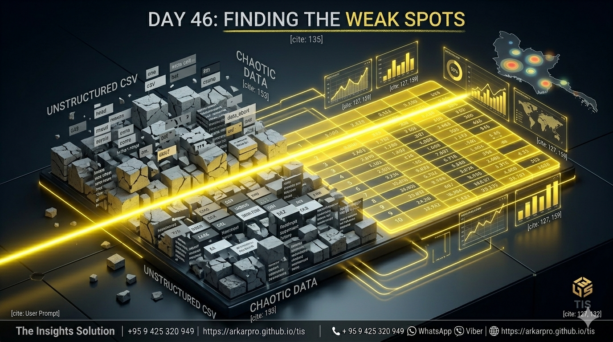
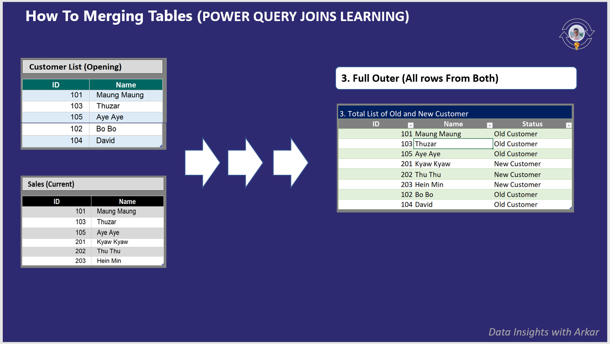
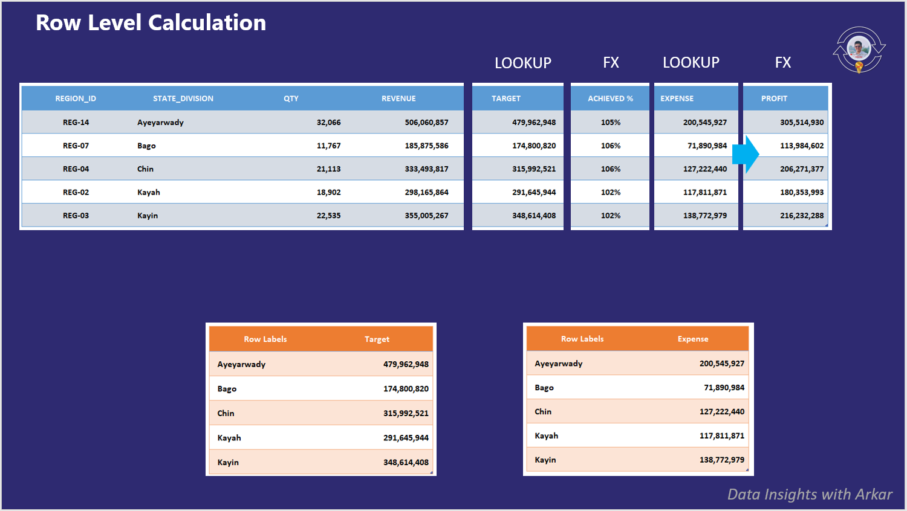

The Power Query Arsenal ⚡
📂 1.1 Folder Automation (ဖိုင်ပေါင်း ၂၆၀ ကျော်ကို တစ်ချက်တည်းပေါင်းခြင်း)
🔥 The Pain: ၂၀၂၃၊ ၂၀၂၄ လအလိုက် ခွဲထားတဲ့ Sales ဖိုင်ရာပေါင်းများစွာကို တစ်ခုချင်းဖွင့်ပြီး Copy-Paste လုပ်နေရတာ အချိန်ကုန် လူပင်ပန်းစေပါတယ်။
💡 The Solution: Folder Path Connection ကို အသုံးပြုပြီး ဖိုဒါထဲမှာ ဖိုင်ဘယ်လောက်များများ တစ်ခါတည်း ဆွဲယူပါမယ်။ ဖိုင်အသစ်ထပ်တိုးလာရင် "Refresh" နှိပ်ရုံနဲ့ Auto ပါဝင်လာမည့် ၁၀၀% Automated Data Flow ကို တည်ဆောက်ပါမည်။

📄 2.1 Mastering CSV Data Imports (System Data Cleaning)
🔥 The Pain: ERP သို့မဟုတ် SAP ကလာတဲ့ CSV တွေမှာ အပေါ်ဆုံးက ခေါင်းစဉ်ပိုတွေ၊ အောက်ခြေ Footer တွေကြောင့် Data ပြင်ရတာ တော်တော်ခေါင်းစားရပါတယ်။
💡 The Solution: Dynamic Filtering နည်းလမ်းကိုသုံးပြီး အမှိုက်တွေကို အလိုအလျောက် ရှင်းထုတ်ပါမယ်။ နိုင်ငံတကာ Date Format လွဲချော်မှုတွေကို "Using Locale" ဖြင့် စနစ်တကျ ဖြေရှင်းပြသွားပါမည်။

🗝️ 2.4 Multiple Sheets Consolidation (The Pro Secret)
🔥 The Pain: Excel ဖိုင်တစ်ခုတည်းမှာ Jan, Feb, Mar ဆိုပြီး Sheet တွေခွဲထားရင် ပေါင်းရတာ အရမ်းပင်ပန်းပါတယ်။
💡 The Solution: Blank Query တွေ ရေးနေစရာမလိုပါဘူး။ Step Stripping နည်းလမ်းကိုသုံးပြီး Navigation အဆင့်ကို ဖြတ်ထုတ်ကာ Sheet အားလုံးကို Stacked ပုံစံ အလိုအလျောက် ပေါင်းစပ်ပြသွားပါမယ်။

⏬ 3.3 Fill Data & Shaping (Excel Merge & Center ပြဿနာကို ရှင်းခြင်း)
🔥 The Pain: Excel မှာ Merge လုပ်ထားတဲ့ Cells တွေကြောင့် Database မှာ
null တွေ ဖြစ်ကုန်ပြီး Data Analysis လုပ်ရာမှာ ကြီးမားတဲ့ အဟန့်အတား ဖြစ်စေပါတယ်။
💡 The Solution: Fill Down Magic နည်းပညာကို သုံးပြီး Manual လိုက်ရိုက်စရာမလိုဘဲ အပေါ်က ဒေတာတွေကို အောက်က ကွက်လပ်တွေထဲ စက္ကန့်ပိုင်းအတွင်း Auto ဖြည့်သွင်းနည်းကို သင်ယူရပါမယ်။

📅 4.1 Bank Statement Foundation (Messy Data များကို သန့်စင်ခြင်း)
🔥 The Pain: ဘဏ်မှတ်တမ်းတွေမှာ အချိန် (Time) တွေရော၊ ရက်စွဲ (Date) တွေရော ရောထွေးနေပြီး ခေါင်းစဉ်တွေက အပိုတွေ အများကြီး ပါနေတတ်ပါတယ်။
💡 The Solution: Text Extraction နဲ့ The Ultimate Date Fix ကို သုံးပြီး Date Error ကင်းစင်တဲ့ ခိုင်မာသော Data Foundation တစ်ခုကို ဘဏ်စာရင်းတွေပေါ်မှာ အခြေခံပြီး တည်ဆောက်ပါမယ်။

🏆 7.1 Master Table Final (Regional Regional Reporting)
💡 The Final Goal: Target, Expense, နဲ့ Sales ဆိုတဲ့ မတူညီတဲ့ ဒေတာ ၃ ခုကို Bridge တစ်ခုတည်းနဲ့ ပေါင်းစပ်ပြီး Master Table ကြီး တည်ဆောက်ပါမယ်။ နှိပ်လိုက်တာနဲ့ အဖြေတွေချက်ချင်းပြောင်းမည့် Dynamic Dashboard ဖန်တီးရန် အဆင်သင့် ဖြစ်နေပါမယ်။
